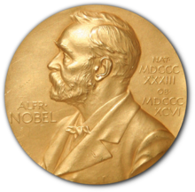
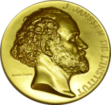

awards
- 1921 Nobel Peace Prize
- Help to win the race to build the atomic bomb.
- 
- 1925 Copley Medal
- Outstanding achievements in research in any branch of science
- The image for the copley medal
- 1926 Gold Medal of the Royal Astronomical Society
- Outstanding personal researches in the fields of astronomy and geophysics

- 1929 Max Planck Medal
- The highest award of the German Physical Society, the world's largest organization of physicists, for extraordinary achievements in theoretical physics.
 - 1931 Prix Jules Janssen
- Given to a professional French astronomer or to an astronomer of another nationality in recognition of astronomical work in general, or for services rendered to Astronomy.
- 
- 1936 Franklin Institute Awards
- World-changing scientists, engineers, inventors, and industrialists—all of whom reflect Benjamin Franklin’s spirit of curiosity, ingenuity, and innovation.

|